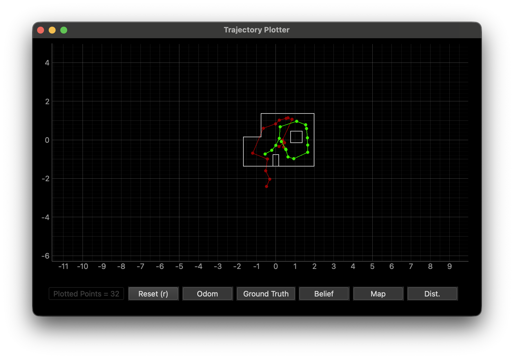
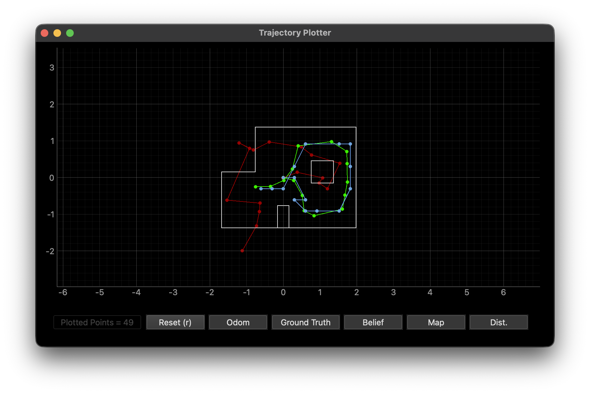

1. Objective
The goal of this lab was to implement grid localization using a Bayes Filter on a virtual robot navigating a known map. The robot's 3D state space (x, y, θ) was discretized into a 12×9×18 grid (1944 cells), and the filter was used to estimate the robot's most probable pose at each of 16 time steps along a pre-planned trajectory.
2. Implementation
Four functions were implemented to complete the Bayes Filter:
2.1 compute_control(cur_pose, prev_pose)
Computes the relative transformation between two consecutive poses and decomposes it into the odometry motion parameters (δrot1, δtrans, δrot2). delta_trans is the Euclidean distance between the two positions (hypot), and delta_rot_1 is the heading toward the new position relative to prev_pose[2] (via atan2). Critically, delta_rot_2 is computed as cur_pose[2] − prev_pose[2] − delta_rot_1 and then normalized via normalize_angle() to ensure the "shortest-path" angle is used — preventing the Gaussian from being evaluated at a numerically distant but geometrically equivalent angle.
2.2 odom_motion_model(cur_pose, prev_pose, u)
Returns the transition probability p(x_t | u_t, x_{t-1}) by computing what control would be needed to go from prev_pose to cur_pose, then comparing that to the actual control u using three independent Gaussians — one each for δrot1, δtrans, and δrot2 — parameterized by odom_rot_sigma and odom_trans_sigma.
2.3 prediction_step(cur_odom, prev_odom)
This implements the Motion Update. It loops over all possible previous and current grid cells. To optimize performance, cells with a previous belief <0.0001 are skipped. The resulting prior belief, loc.bel_bar, is accumulated and normalized to maintain a valid probability distribution.
2.4 sensor_model(obs) + update_step()
The update step is fully vectorized using NumPy. The sensor model computes Gaussian likelihoods for all 18 readings across all 1944 cells simultaneously by broadcasting loc.obs_range_data against mapper.obs_views (shape 12×9×18×18). The product of 18 likelihoods per cell weights bel_bar to produce the final bel, which is then normalized.
def compute_control(cur_pose, prev_pose):
delta_trans = math.hypot(cur_pose[1] - prev_pose[1], cur_pose[0] - prev_pose[0])
delta_rot_1 = mapper.normalize_angle(
math.degrees(math.atan2(cur_pose[1] - prev_pose[1], cur_pose[0] - prev_pose[0]))
- prev_pose[2])
delta_rot_2 = mapper.normalize_angle(cur_pose[2] - prev_pose[2] - delta_rot_1)
return delta_rot_1, delta_trans, delta_rot_2
def odom_motion_model(cur_pose, prev_pose, u):
actual_rot_1, actual_trans, actual_rot_2 = compute_control(cur_pose, prev_pose)
p_rot_1 = loc.gaussian(mapper.normalize_angle(actual_rot_1 - u[0]), 0, loc.odom_rot_sigma)
p_trans = loc.gaussian(actual_trans - u[1], 0, loc.odom_trans_sigma)
p_rot_2 = loc.gaussian(mapper.normalize_angle(actual_rot_2 - u[2]), 0, loc.odom_rot_sigma)
return p_rot_1 * p_trans * p_rot_2
def prediction_step(cur_odom, prev_odom):
u = compute_control(cur_odom, prev_odom)
loc.bel_bar = np.zeros(loc.bel_bar.shape)
for px in range(mapper.MAX_CELLS_X):
for py in range(mapper.MAX_CELLS_Y):
for pa in range(mapper.MAX_CELLS_A):
if loc.bel[px, py, pa] < 0.0001:
continue
prev_pose = mapper.from_map(px, py, pa)
for cx in range(mapper.MAX_CELLS_X):
for cy in range(mapper.MAX_CELLS_Y):
for ca in range(mapper.MAX_CELLS_A):
cur_pose = mapper.from_map(cx, cy, ca)
p = odom_motion_model(cur_pose, prev_pose, u)
loc.bel_bar[cx, cy, ca] += p * loc.bel[px, py, pa]
loc.bel_bar /= np.sum(loc.bel_bar)
def sensor_model(obs):
return loc.gaussian(loc.obs_range_data.reshape(-1), obs, loc.sensor_sigma)
def update_step():
obs_flat = loc.obs_range_data.reshape(-1)
likelihoods = loc.gaussian(mapper.obs_views, obs_flat, loc.sensor_sigma)
loc.bel = np.prod(likelihoods, axis=3) * loc.bel_bar
loc.bel /= np.sum(loc.bel)3. Results
The plotter visualizes odometry (red), ground truth (green), and Bayes Filter belief (blue). The belief tracks the ground truth closely for the majority of the trajectory, while odometry drifts significantly — especially in angle — due to accumulated error.

Figure 1 — The given pre-planned trajectory the virtual robot follows through the map.

Figure 2 — Full 16-step trajectory result. Odometry (red) drifts badly; ground truth (green) and Bayes Filter belief (blue) remain tightly coupled.
Video 1: Final simulation run — Bayes Filter localizing the robot across all 16 steps.
4. Per-Step Summary
The table below compares the ground truth pose, the Bayes Filter's most probable belief pose, and the resulting position/angle error at each of the 16 time steps.
| Step | GT Pose (x, y, θ°) | Belief Pose (x, y, θ°) | Belief Prob | Pos Error (x, y, θ°) |
|---|---|---|---|---|
| 0 | (0.290, −0.079, 321.9°) | (0.305, 0.000, −50.0°) | 0.9999999 | (−0.015, −0.079, 11.9°) |
| 1 | (0.528, −0.509, 659.0°) | (0.610, −0.610, −50.0°) | ~1.0 | (−0.082, 0.101, −11.0°) |
| 2 | (0.528, −0.509, 996.1°) | (0.305, −0.610, −90.0°) | ~1.0 | (0.223, 0.101, 6.1°) |
| 3 | (0.570, −0.906, 1356.1°) | (0.610, −0.914, −90.0°) | ~1.0 | (−0.040, 0.008, 6.1°) |
| 4 | (0.838, −1.041, 1801.5°) | (0.914, −0.914, 10.0°) | ~1.0 | (−0.076, −0.127, −8.5°) |
| 5 | (1.611, −0.861, 2210.9°) | (1.524, −0.914, 50.0°) | 0.9999999 | (0.087, 0.053, 0.9°) |
| 6 | (1.682, −0.475, 2599.6°) | (1.829, −0.305, 90.0°) | ~1.0 | (−0.147, −0.170, −10.4°) |
| 7 | (1.747, −0.121, 2965.2°) | (1.829, −0.305, 90.0°) | ~1.0 | (−0.081, 0.184, −4.8°) |
| 8 | (1.739, 0.379, 3348.2°) | (1.829, 0.305, 110.0°) | 0.9577403 | (−0.090, 0.075, −1.8°) |
| 9 | (1.733, 0.709, 3747.4°) | (1.829, 0.914, 150.0°) | ~1.0 | (−0.096, −0.205, −2.6°) |
| 10 | (1.312, 0.979, 4118.8°) | (1.524, 0.914, 150.0°) | ~1.0 | (−0.212, 0.065, 8.8°) |
| 11 | (0.404, 0.860, 4576.2°) | (0.610, 0.914, −110.0°) | 0.9999999 | (−0.205, −0.054, 6.2°) |
| 12 | (0.249, 0.229, 4981.3°) | (0.305, 0.305, −70.0°) | ~1.0 | (−0.055, −0.076, 11.3°) |
| 13 | (0.010, −0.083, 5272.5°) | (0.000, −0.305, −130.0°) | ~1.0 | (0.010, 0.222, 2.5°) |
| 14 | (−0.349, −0.243, 5609.6°) | (−0.305, −0.305, −150.0°) | ~1.0 | (−0.045, 0.062, −0.4°) |
| 15 | (−0.749, −0.250, 5946.6°) | (−0.610, −0.305, −170.0°) | 0.9946060 | (−0.140, 0.055, −3.4°) |
5. Analysis: When It Works and When It Doesn't
5.1 Success Conditions
The filter excels in geometrically unique regions (corners/alcoves). In steps 3–5 and 14–15, position errors remained <0.15 m with belief probabilities of ~1.0. The 18-ray sensor model provides a highly discriminative "signature" that allows the update step to recover even from a diffuse or inaccurate prior — for instance, in Step 3, the update step successfully corrected the belief despite bel_bar at the winning cell being only 0.00055.
5.2 Failure Modes
Challenges arose during rapid rotations (Steps 0–2) and when odometry drift was at its peak. Because the ground truth yaw accumulates unboundedly (reaching 5946° by Step 15) while grid cells are constrained to [−180°, 180°), the prediction step occasionally placed prior mass in a non-winning cell. Step 2 exhibited the highest translational error (0.223 m) because the motion was primarily rotational, making the translation component of the motion model less discriminative.
Most strikingly, Steps 5 and 10 saw bel_bar values of 6.5×10⁻¹⁵ and 3.3×10⁻⁶ at the correct cell — effectively a small-scale Kidnapped Robot scenario where the prediction step considered the true pose nearly impossible. In both cases, the 18-ray sensor model was strong enough to "rescue" the filter, assigning ~1.0 probability to the correct cell after the update. This robustness is a direct result of the richness of the full 360° scan.
Key Inference: The Bayes Filter successfully dampens odometry noise. While raw odometry drifted far outside the map boundaries, the sensor-weighted update consistently snapped the robot back to the correct grid cell, keeping angular error under 12° (within the 20° cell resolution) and translational error under ~0.22 m throughout the entire 16-step trajectory.
AI usage: AI was used to build this site and to help format and structure the lab writeup.